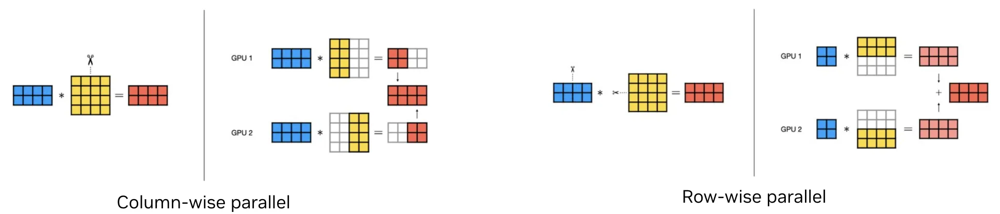
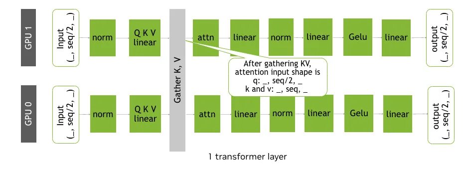
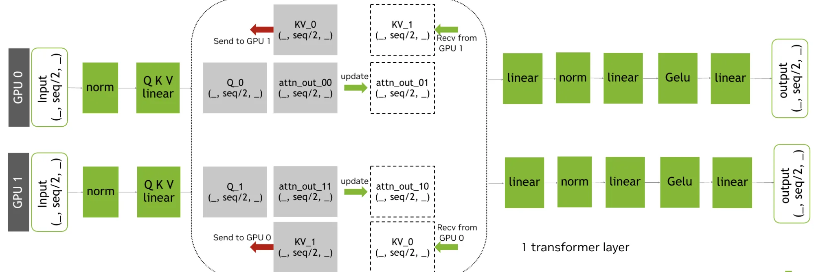
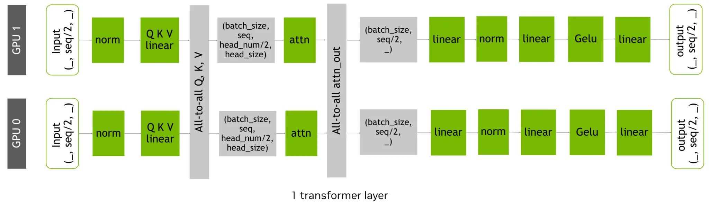
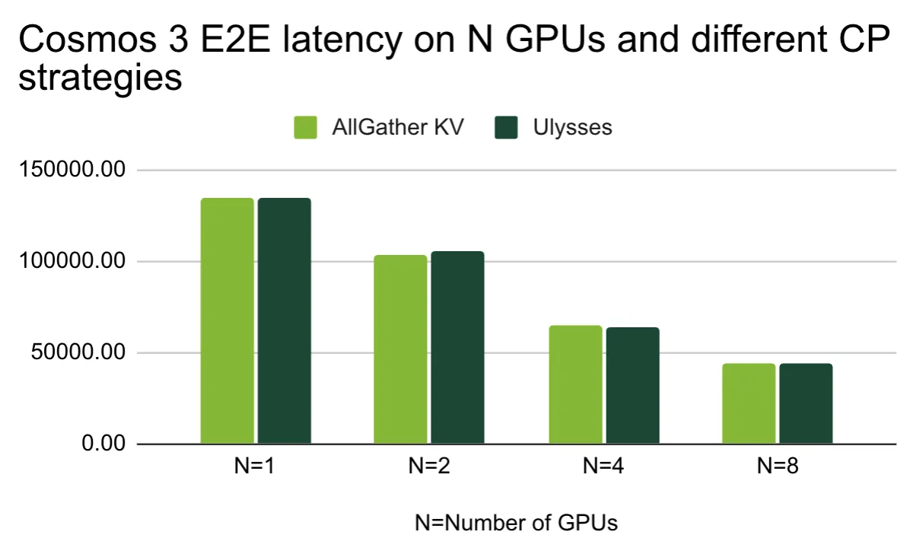
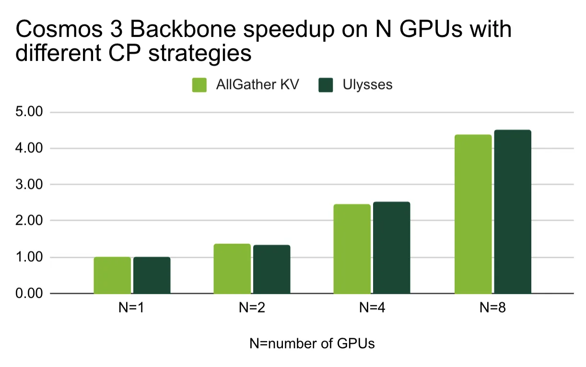
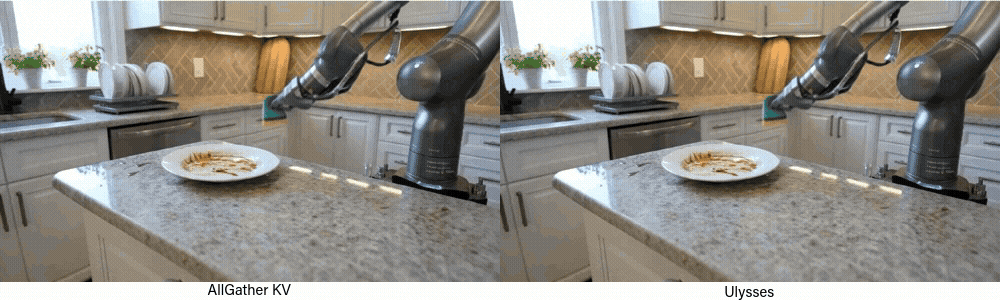
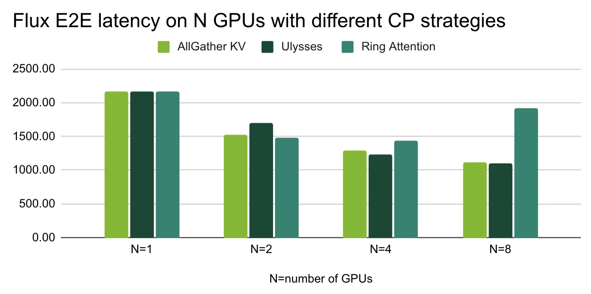
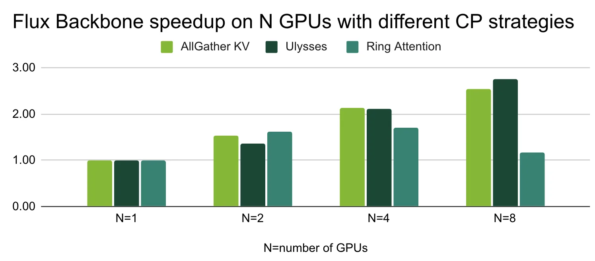
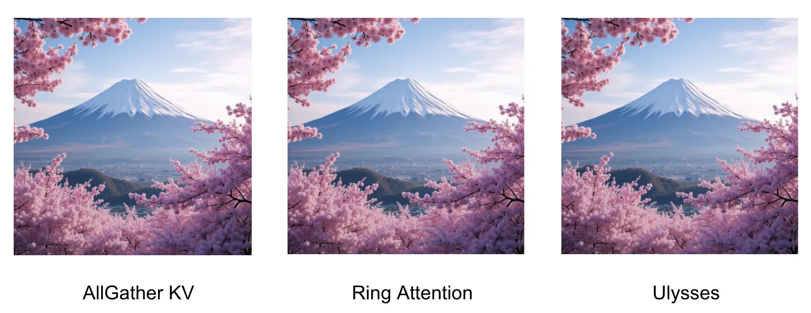

生成式AI工作负载正在快速超出单GPU的显存和算力预算。对于构建媒体生成流水线的推理开发者而言，挑战在于跨多设备扩展时，不牺牲NVIDIA TensorRT为生产部署提供的关键优化：如kernel fusion、内存规划和量化。
NVIDIA集合通信库（NCCL）提供高性能多GPU和多节点集合操作，支撑着数千GPU上的大规模模型训练。NCCL自动为给定拓扑选择最优传输方式，将NVIDIA NVLink、NVSwitch、PCIe和InfiniBand抽象在统一接口之后。通过与NCCL直接集成，TensorRT在运行多设备推理时继承了这种传输优化。
新的多设备特性覆盖了完整的NCCL分布式集合操作集：AllReduce、Broadcast、Reduce、AllGather、ReduceScatter、AlltoAll、Gather和Scatter：涵盖训练和推理场景的全部通信原语。
分布式推理可以通过几种并行策略来实现，每种策略在内存节省、计算扩展和通信开销之间有不同的权衡。最常见的策略是张量并行和上下文并行。
在张量并行中，单层权重被分区到多个GPU上。每个GPU计算该层矩阵乘法的分片，然后通过集合操作合并部分结果以产生完整输出。这减少了每设备的内存占用量：当单层权重超过单GPU显存时，这是自然（且往往是唯一）的选择，与输入序列长度或批次大小无关。
在Transformer块中，列并行投影（如QKV和MLP上投影）与行并行投影（注意力输出和MLP下投影）配对，使得每个块只需要一次AllReduce，通信开销保持有界。如下图为列方向和行方向的并行投影对比。

在上下文并行中，输入序列沿序列维度被分区到多个GPU上。每个GPU仅处理序列的一个切片，而集合操作在需要时使全局序列可用：例如在注意力计算期间。上下文并行对于长序列工作负载特别有效，因为注意力的二次缩放使其成为计算和内存的主要消耗者。
它也是扩散和DiT模型的自然选择，因为其双向注意力规避了因果掩码引起的负载不均衡问题。
NVIDIA TensorRT 11.0引入了各种并行化策略所需的 IDistCollectiveLayer 原语支持。本文其余部分聚焦于上下文并行：它直接解决了现代生成式媒体流水线中的主要成本：长序列注意力。
扩散模型中的注意力块处理长token序列：一幅高分辨率图像潜变量或一段多帧视频剪辑可以在每个块中产生数万token。由于注意力与序列长度呈二次缩放，上下文并行的实现方式直接影响端到端性能。
上下文并行将序列分区到多个GPU上。每个rank处理与其分区对应的查询（Q）切片。AllGather KV是最直接的实现：rank通过AllGather集合交换其键（K）和值（V）分片，然后计算局部注意力，使每个rank能够关注完整序列。
结果是每个rank的注意力输出覆盖完整序列，代价是每个注意力块增加一次集合操作，而局部Q × Kᵀ 矩阵乘法随rank数量成比例缩小。对于视频和高分辨率图像扩散，这种权衡在去噪步骤中有利地累积：通信开销每步有界，计算和内存节省适用于每一步的每个注意力层。

Ring Attention是AllGather KV的一个改进方向：通信和计算重叠。每个GPU在处理局部Q的同时，K和V以环形拓扑持续流过。Ring Attention还减少了内存占用：使用在线softmax，完整尺寸的K和V张量无需在任何GPU上实例化。
这意味着8块GPU上每块只需持有1/8的K和V，峰值显存显著降低。

对于数万token级别的超长上下文，DeepSpeed Ulysses采用不同的策略。它首先沿序列维度将样本分区到各GPU，然后在注意力计算之前，对分区后的Q、K、V使用 all-to-all 通信集合。
这确保每个GPU收到完整的序列长度，但仅针对注意力头的一个非重叠子集，使它们能够并行计算注意力。之后第二个all-to-all收集各注意力头的结果，同时沿序列维度重新分区。Ulysses在超长上下文中是最优选择。

NVIDIA Cosmos模型平台是一个世界基础模型平台，Cosmos3-Nano能基于多模态输入生成图像、视频、音频等。测试使用多模态输入提示文件进行。
结果显示，当扩散模型具有极长上下文长度时，Ulysses是明显胜者：在8 GPU上端到端延迟最低，AllGather KV次之，Ring Attention表现相对较弱。从speedup图看，Ulysses近乎线性扩展。
下图展示了不同CP策略在8 GPU上Cosmos 3的生成结果对比。



Black Forest Labs的FLUX.1-dev图像生成模型使用提示词 "a beautiful photograph of Mt. Fuji during cherry blossom" 进行测试。
在图像生成场景下，Ulysses同样胜出。值得注意的是Ring Attention在4 GPU以内扩展性也不错，但8 GPU时Ulysses优势明显。三种策略的生成质量几乎一致：从输出对比图看，富士山樱花图在视觉上无明显差异。



TensorRT多设备推理的核心工作流与单设备类似，区别在于网络可包含分布式通信层。下面是从创建网络到启动推理的六个步骤概要：
通过 IDistCollectiveLayer 实现跨GPU通信。使用 INetworkDefinition::addDistCollective 将集合操作加入TensorRT网络。对于归约类集合（ALL_REDUCE、REDUCE、REDUCE_SCATTER）指定 ReduceOperation::kSUM；非归约类（ALL_GATHER、BROADCAST等）用 ReduceOperation::kNONE。
创建构建器配置并序列化网络；创建推理运行时和绑定IO张量；设置NCCL通信器并 enqueueV3 执行推理。使用OpenMPI在目标GPU数上启动：每个rank选择本地CUDA设备、初始化NCCL、创建自己的TensorRT引擎和执行上下文。NCCL通信器必须在使用它的执行上下文生命周期内保持有效。
参考：https://developer.nvidia.com/blog/scaling-ai-inference-across-multiple-gpus-using-nvidia-tensorrt-with-multi-device-inference-support/